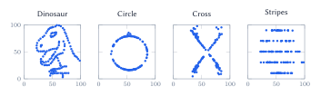
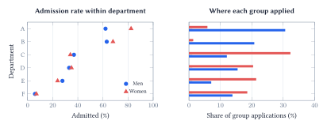
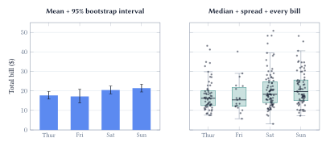
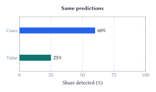
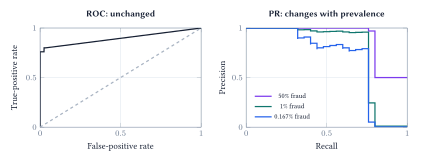
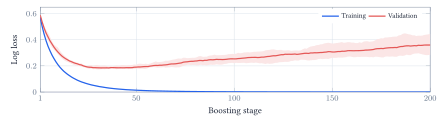
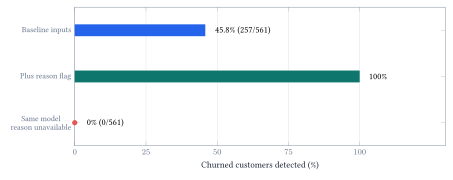
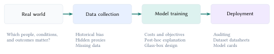

Lecture 6: Evaluation Pitfalls
Data visualization and the evidence behind a score
A number can be correct and still support the wrong conclusion. The central question is not simply whether a model scores well, but what the score leaves out and whether the evaluation resembles the decision we need to make.
Learning goals. Inspect what summaries hide; compare models on a common population and meaningful error costs; audit what information was available when a prediction had to be made.
Look before you summarize
Summary statistics omit structure. A mean, standard deviation, or correlation describes only a small part of a dataset. Visualizing the observations can reveal patterns that these summaries leave out.

A correlation near zero does not imply the absence of a pattern. Before fitting or comparing models, inspect distributions, unusual cases, and relationships between variables. Then check whether the pattern changes when meaningful groups remain visible.
Ask what one point represents. A plot of people, transactions, or group averages can support very different conclusions.
The purpose of visualization is not to decorate an analysis. It is to expose structure that a compressed description would otherwise hide.
An overall average mixes different worlds
For groups \(g\), an overall rate is a weighted average:
\[ r_{\mathrm{overall}}=\sum_g w_g r_g,\qquad \sum_g w_g=1. \]
Both the within-group rates \(r_g\) and population mix \(w_g\) matter. Changing the mix can change an overall rate even when within-group performance is unchanged.

The driving benchmark trap
Consider two illustrative driving systems. MPD means miles per disengagement; higher is better on this metric, but does not alone establish safety. Neither system represents a real company’s results.
| Setting | Legacy MPD | Legacy miles driven | Next-generation MPD | Next-generation miles driven |
|---|---|---|---|---|
| Highway | 1,000 | 100,000 | 2,000 | 2,000 |
| Urban | 10 | 1,000 | 20 | 100,000 |
Do not average the two MPD values. First recover disengagement counts as miles divided by MPD, then divide total miles by total disengagements:
\[ \begin{aligned} \mathrm{MPD}_{\mathrm{legacy}}&=\frac{100{,}000+1{,}000}{100{,}000/1{,}000+1{,}000/10}=505,\\ \mathrm{MPD}_{\mathrm{next}}&=\frac{2{,}000+100{,}000}{2{,}000/2{,}000+100{,}000/20}\approx20.4. \end{aligned} \]
The overall ranking reverses despite improvement in each setting. Report subgroup results and compare on a common, relevant operating mix. A benchmark headline such as 83% versus 72% is not enough without knowing the tasks, populations, and weighting behind it.
Choose the comparison before the chart
Different charts preserve different information. A scatter plot keeps individual numeric pairs visible; a line additionally implies a meaningful order. Color can distinguish groups, while shape can repeat the same distinction for readability. Extra encodings are useful only when they help answer the question.
Uncertainty in an average is not variation in the data
The restaurant example uses the same bills in both panels. A bar with an interval describes an estimated mean. A boxplot with observations describes the distribution of individual bills.

The box contains the middle 50% of observations. Whiskers reach the most extreme observations within 1.5 interquartile ranges of the box; they need not reach the minimum and maximum. Friday has only 19 observations, compared with 87 on Saturday. Neither a neat mean nor a narrow interval makes this observational sample representative of every restaurant.
| Question | Useful view | What to check |
|---|---|---|
| How do two measurements vary together? | Scatter plot; grouped colors or shapes | One point’s meaning; overlap; pooled versus within-group trends |
| What does one variable look like? | Histogram or KDE | Bin width or smoothing bandwidth; a smooth curve is not uniquely correct |
| How do two distributions connect? | Joint scatter with marginal histograms | Overlapping groups can become distinct in two dimensions |
| How does training change? | Loss curves with a labeled band | Ordered stages; what repeated trials the band represents |
| Which category is higher? | Bars or dots on a common baseline | Comparable scales; radar shape depends on axis order |
Count the errors, then count their consequences
In the notebook’s fixed test split, 25 of 15,000 transactions are fraud. A model that always predicts legitimate achieves 99.833% accuracy while missing every fraud. The random forest reaches 99.913%; the important difference appears in the errors, not the small change in accuracy.
| Actual / predicted | Legitimate | Fraud |
|---|---|---|
| Legitimate | 14,972 | 3 |
| Fraud | 10 | 15 |

With fraud as the positive class, true positives (TP) are caught frauds, false negatives (FN) are missed frauds, and false positives (FP) are false alarms. Then
\[ \mathrm{Recall}=\frac{\mathrm{TP}}{\mathrm{TP}+\mathrm{FN}}=60\%,\qquad \mathrm{Precision}=\frac{\mathrm{TP}}{\mathrm{TP}+\mathrm{FP}}=83.3\%. \]
Recall asks how many frauds we caught. Precision asks how many alerts were actually fraud. F1 combines these rates, but none of these measures represents financial consequences by itself.
The caught frauds total €1,309.20 out of €5,246.73: approximately 25% of fraudulent value. The missed frauds have a higher average value than the caught frauds. This is value detected, not proven savings; intervention effectiveness and false-alarm costs are not measured here.
Align the objective with the decision
Cost-sensitive learning connects model design to the consequences of mistakes. If false positives and false negatives have costs \(C_{\mathrm{FP}}\) and \(C_{\mathrm{FN}}\), one evaluation is
\[ \mathrm{Cost}=C_{\mathrm{FP}}\,\mathrm{FP}+C_{\mathrm{FN}}\,\mathrm{FN}. \]
For a probability \(p=P(Y=1\mid x)\) that is appropriate for the deployment population, predicting positive has expected cost \(C_{\mathrm{FP}}(1-p)\); predicting negative has cost \(C_{\mathrm{FN}}p\). With zero cost for correct decisions, choose positive when
\[ p>\frac{C_{\mathrm{FP}}}{C_{\mathrm{FP}}+C_{\mathrm{FN}}}. \]
Thus 0.5 is not a universal operating threshold. If costs vary by transaction, the decision may need to depend on the transaction too. Training weights can emphasize costly errors, but must still be checked with deployment-aligned validation and probability assessment.
Population and validation change the story
Let \(\pi=P(Y=1)\) be prevalence, TPR be recall, and FPR be the false-positive rate. The fraction of alerts that are genuine positives is
\[ \mathrm{Precision}=\frac{\pi\,\mathrm{TPR}}{\pi\,\mathrm{TPR}+(1-\pi)\,\mathrm{FPR}}. \]
The base rate matters even when the two class-conditional rates are unchanged.

At 80% recall and 1% FPR, 100 frauds and 99,900 legitimate transactions produce 80 genuine alerts and 999 false alarms: precision is only 7.4%. ROC is not lying; it does not directly answer how useful an alert will be.
Use validation for choices, testing for the final check
Training fits parameters; validation chooses settings and thresholds; an untouched test set evaluates the selected procedure. With only 25 frauds in the current test, one additional detection changes recall by four percentage points.

Choose splits that match the intended use: future periods for forecasting, disjoint people for new-patient prediction, and training-only fitting of preprocessing. The learning-curve demonstration uses validation to illustrate stopping; it does not reserve a final test set or establish clinical utility.
Could we have known this in time?
A held-out row is not automatically a valid future prediction. In the notebook’s IBM Telco sample, the presence of a Churn Reason is enough to reveal that the customer left. But the decision is to contact the customer before that happens.

The baseline uses tenure, charges, and contract, catching 257 of 561 churners. Adding the flag yields a perfect test score. A random split cannot prevent this shortcut when the revealing feature is supplied to both training and test customers.
Repair the evaluation, not just the headline
Remove unavailable fields, rebuild the training procedure, and evaluate on data representing the later decision. The dataset is a fictional company snapshot, not a longitudinal record, so even the baseline features need an availability audit before they could support a real forecasting claim.
The same issue appears when an AI agent can see answer-bearing files or conversation history. Holding out question IDs is not enough if the answers remain accessible. An evaluation must specify both the examples and the information the system can use.
Do not confuse a perfect score with strong evidence. First ask how that score was possible, then test the suspected shortcut directly.
Audit the system, not just the model
Real-world conditions shape data collection; data shape training; the trained system then acts in the world. A failure can originate at any of these steps.

Data can carry the problem into the model
Historical decisions can become labels that reproduce past practice rather than the desired outcome. A seemingly ordinary variable can act as a proxy for a sensitive attribute. Missing observations can change who is represented, and missingness itself can reveal the outcome, as in the churn example. Audit the collection and labeling process before treating the table as ground truth.
Explanation is not the same as transparent design
Post-hoc explainability asks what a fitted model appears to rely on. It can suggest shortcuts to test, but is not proof of causation, fairness, or correctness. Glass-box design makes the model’s structure directly inspectable. Transparency helps scrutiny; it does not repair biased data or a mismatched objective by itself.
Make the evaluation travel with the system
A dataset datasheet records motivation, composition, collection, and intended uses. A model card records intended use, evaluation conditions, limitations, and relevant subgroup performance. They make assumptions inspectable, while deployment auditing checks whether those assumptions continue to hold.
The central question: what did the number leave out? Inspect observations before trusting summaries, compare groups before comparing pooled scores, evaluate the consequences of errors, and enforce the information boundary of the real decision. A high score is useful evidence only when its population, costs, and evaluation conditions are clear.
Sources and scope. Figures are native-LaTeX redrawings of the verified Lecture 6 notebook (commit 5d512e1) or clearly labeled conceptual examples. Datasaurus is deliberately constructed; the driving benchmark is illustrative; IBM Telco is fictional. The restaurant and credit-card examples use recorded observations. See also the canonical Berkeley counts, Seaborn sample-data sources, IBM field descriptions, and Wisconsin dataset documentation. Dataset/model documentation follows Gebru et al., Datasheets for Datasets, and Mitchell et al., Model Cards for Model Reporting.
Acknowledgment. These notes are based on the instructor’s handwritten notes and transcripts of lecture discussions and were editorially polished and typeset with assistance from OpenAI Codex and Anthropic Claude. The instructor reviewed and is responsible for the final content.